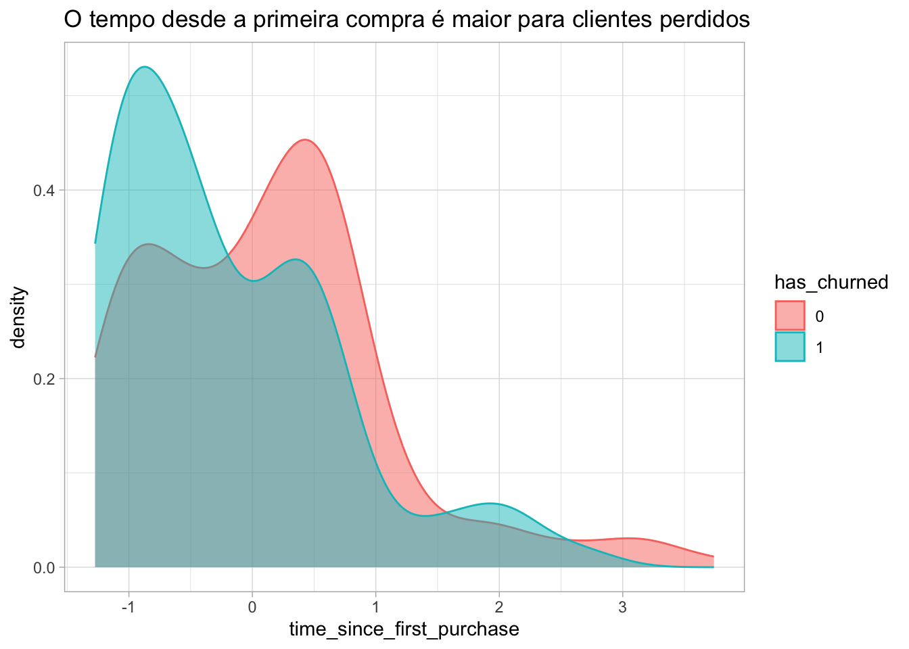
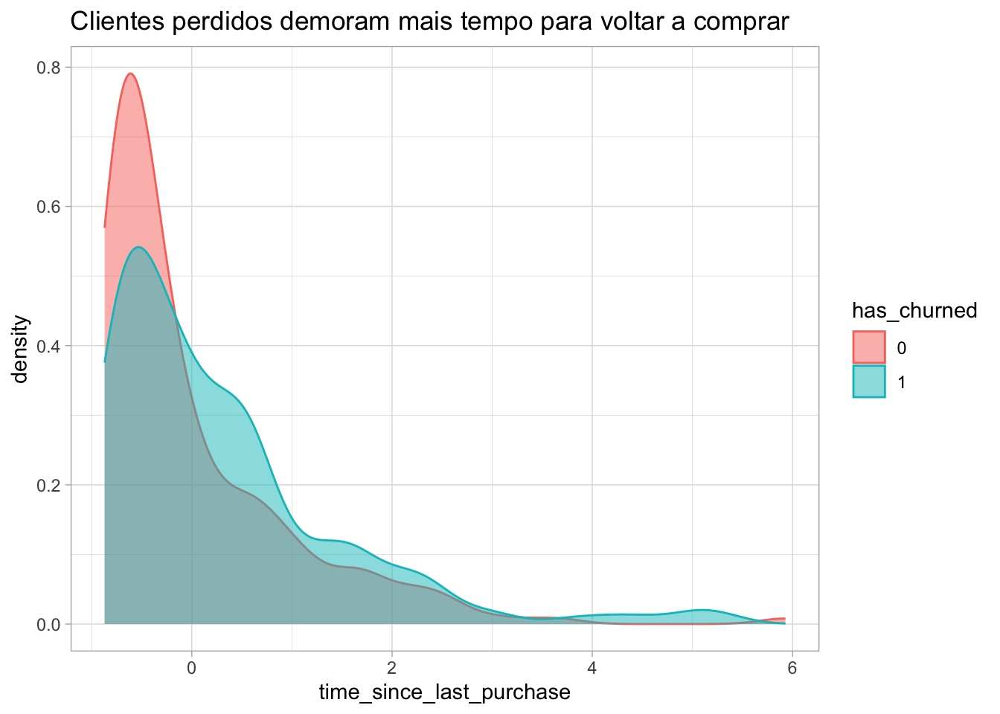
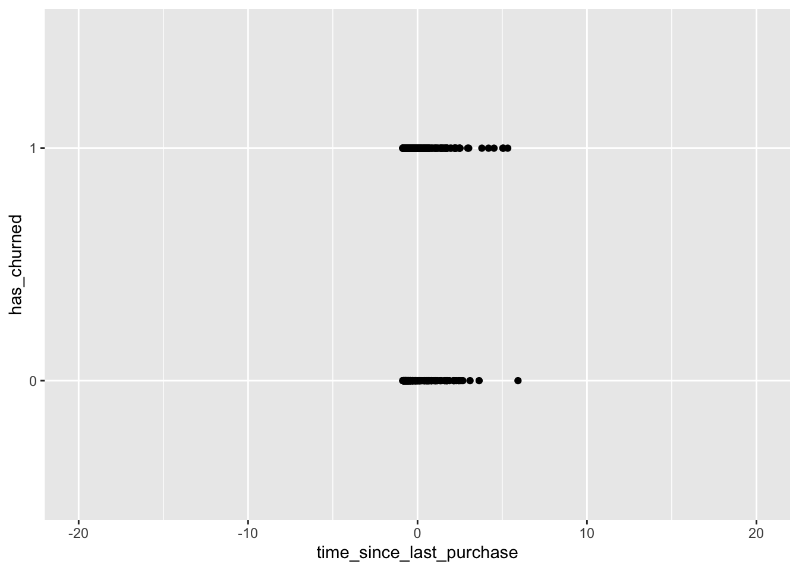
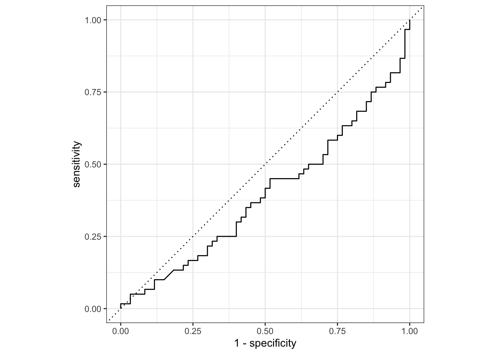
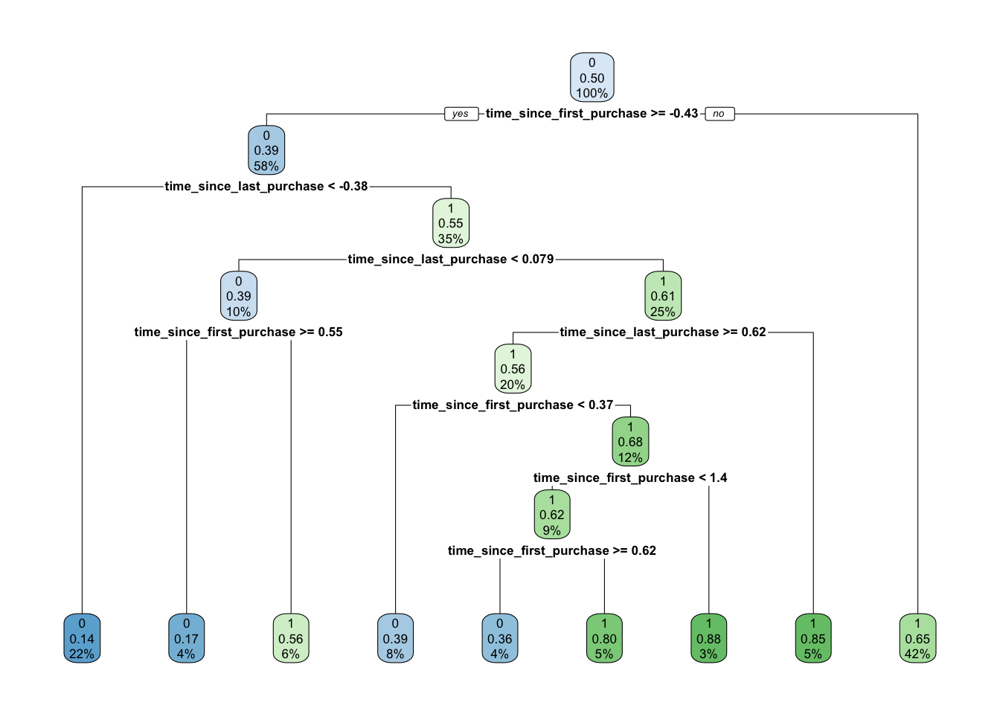
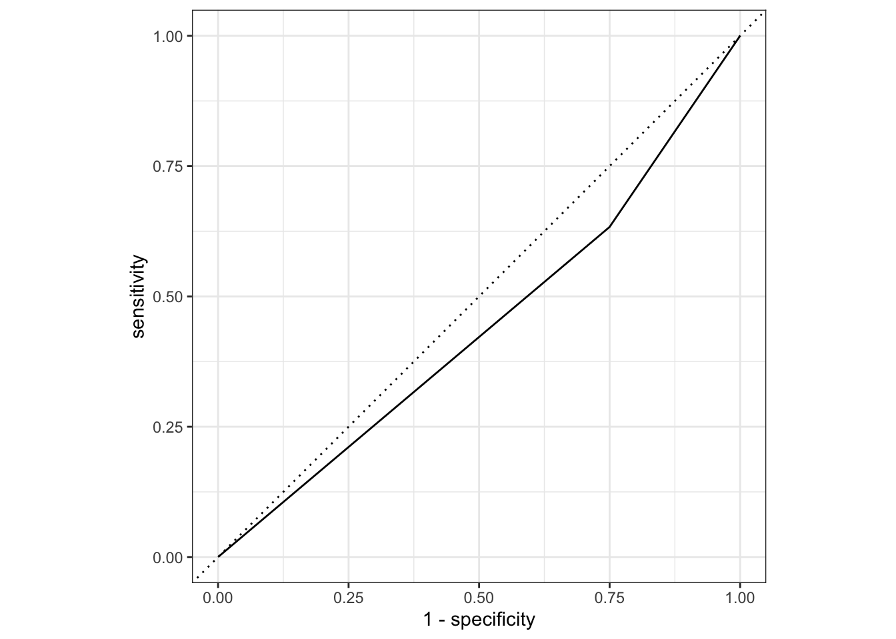
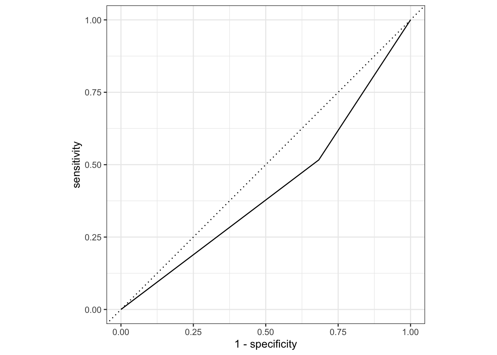

Tutorial 6 - Métodos de Classificação simplificados
Aprendizagem Supervisionada
Carregando os pacotes
Vamos usar um dataset sobre churn.
library(tidyverse)
library(tidymodels)
library(fst)Regressão Logística
Carregando o dataset
churn <- read_fst("data6/churn.fst")
churn$has_churned <- as_factor(churn$has_churned)Vamos fazer uma análise da estrutura dos dados:
glimpse(churn)Rows: 400
Columns: 3
$ has_churned <fct> 0, 0, 0, 0, 0, 0, 0, 0, 0, 0, 0, 0, 0, 0, 0,…
$ time_since_first_purchase <dbl> -1.08922097, 1.18298297, -0.84615637, 0.0869…
$ time_since_last_purchase <dbl> -0.72132150, 3.63443539, -0.42758226, -0.535…summary(churn) has_churned time_since_first_purchase time_since_last_purchase
0:200 Min. :-1.27377 Min. :-0.8707
1:200 1st Qu.:-0.82838 1st Qu.:-0.6458
Median :-0.15207 Median :-0.2650
Mean :-0.03437 Mean : 0.1445
3rd Qu.: 0.54483 3rd Qu.: 0.5712
Max. : 3.73831 Max. : 5.9282 A regressão logística tem a propriedade de predizer valores entre o intervalo 0 e 1 (pense nesses valores como a probabilidades de churn de 0 a 100%).
Análise Exploratória de Dados
Uma breve EDA mostra a relação entre os tempos de primeira e última compras com o churn de clientes.
churn %>%
ggplot(aes(time_since_first_purchase, fill=has_churned,
color=has_churned))+
geom_density(alpha = 0.5)+
labs(title = "O tempo desde a primeira compra é maior para clientes perdidos")+
theme_light()
Já para o tempo desde a última compra:
churn %>%
ggplot(aes(time_since_last_purchase, fill=has_churned,
color=has_churned))+
geom_density(alpha = 0.5)+
labs(title = "Clientes perdidos demoram mais tempo para voltar a comprar")+
theme_light()
Modelo
O primeiro passo será separar os dados em treino e teste.
set.seed(1212)
split <- initial_split(churn, prop = 0.7, strata = has_churned)
train <- training(split)
test <- testing(split)Para treinar um modelo de regressão logística, usamos a função glm() e o argumento family = "binomial"
logmodel <- glm(has_churned ~ ., data = train, family = "binomial")
logmodel
Call: glm(formula = has_churned ~ ., family = "binomial", data = train)
Coefficients:
(Intercept) time_since_first_purchase
-0.1129 -0.7370
time_since_last_purchase
0.5950
Degrees of Freedom: 279 Total (i.e. Null); 277 Residual
Null Deviance: 388.2
Residual Deviance: 358.6 AIC: 364.6Para se ter uma noção sobre a curva de ajuste, a regressão logística segue o formato de uma curva em “S” onde as probabilidades (neste caso de churn) sempre estarão entre 0 e 1
curva <- churn %>%
ggplot(aes(time_since_last_purchase, has_churned))+
geom_point()+
scale_x_continuous(limits = c(-20,20))
curva
adicionamos uma camada: stat_smooth(method="glm", method.args=list(family="binomial"), fullrange = TRUE, se = FALSE) ao ggplot:
curva +
stat_smooth(method="glm",
method.args=list(family="binomial"),
fullrange = TRUE,
se = FALSE)
Para predizer valores a partir de novos dados de time_since_last_purchase e time_since_first_purchase deve-se usar a função predict(). Podemos criar um novo dataframe denominado churn_df_log e incluir uma nova coluna com predict() dentro do mutate()
pred <- predict(logmodel,
test,
type = "response")
churn_df_log <- test %>%
mutate(pred_log = pred)Agora vamos plotar a curva ROC e calcular a área abaixo da curva ROC, conhecida como AUC.
# Plotar a curva ROC com autoplot
autoplot(roc_curve(churn_df_log, has_churned, pred_log))
# Calcular AUC usando a função roc_auc
roc_auc(churn_df_log, has_churned, pred_log)# A tibble: 1 × 3
.metric .estimator .estimate
<chr> <chr> <dbl>
1 roc_auc binary 0.397Árvores de Decisão
Árvores de Decisão, ou Decision Trees, são algoritmos de machine learning largamente utilizados, com uma estrutura de simples compreensão e que costumam apresentar bons resultados em suas previsões.
Eles também são a base do funcionamento de outros poderosos algoritmos, como o Random Forest, por exemplo.
As decision trees estão entre os primeiros algoritmos aprendidos por iniciantes no mundo do aprendizado de máquina.
Mais detalhes sobre como funciona em: didatica.tech
library(rpart)
library(rpart.plot)
tree_model <- rpart(has_churned ~.,
data = train,
method = "class")rpart.plot(tree_model)
Agora que a árvore de decisão foi criada, podemos verificar a sua precisão comparando as previsões com a coluna original.
pred_tree <- predict(tree_model,
test,
type = "class")
churn_df_tree <- test %>%
mutate(pred_tree = pred_tree)Antes de continuar, precisamos converter a coluna has_churned para factor e a coluna pred_tree para numeric
#convertendo has_churned para factor
churn_df_tree$has_churned <- factor(churn_df_tree$has_churned, levels = c(0,1))
#convertendo pred_tree para numeric
churn_df_tree$pred_tree <- as.character(churn_df_tree$pred_tree)
churn_df_tree$pred_tree <- as.numeric(churn_df_tree$pred_tree)Agora sim, podemos plotar a curva ROC
autoplot(roc_curve(churn_df_tree, truth = has_churned, pred_tree))
E a AUC:
roc_auc(churn_df_tree, truth = has_churned, pred_tree)# A tibble: 1 × 3
.metric .estimator .estimate
<chr> <chr> <dbl>
1 roc_auc binary 0.442Random Forests
Em português, Random Forest significa floresta aleatória. Este nome explica muito bem o funcionamento do algoritmo.
Em resumo, o Random Forest irá criar muitas árvores de decisão, de maneira aleatória, formando o que podemos enxergar como uma floresta, onde cada árvore será utilizada na escolha do resultado final, em uma espécie de votação. Mais detalhes em: didatica.tech.
Vamos carregar o pacote ranger que serve para treinar Random Forests
library(ranger)# treinar um modelo usando o pacote `ranger`
rf_model <- ranger(has_churned ~ .,
data = train,
num.trees = 500,
classification = TRUE)Uma vez que o modelo foi treinado, vamos calcular o indicadores de acurácia utilizando os procedimentos já vistos. Porém, há um passo intermediário que serve para extrair as predições do objeto criado pelo predict() do ranger.
rf_predict <- predict(rf_model, data = test, type = "response")$predictionsAgora sim, podemos utilizar o código dos modelos anteriores, adaptando-o ligeiramente para incluir o vetor criado acima com os valores preditos.
churn_df_rf <- test %>%
mutate(pred_rf = rf_predict)Como no caso anterior, a coluna has_churned precisa estar no formato factor, e a coluna pred_rf no formato numeric.
#convertendo has_churned para factor
churn_df_rf$has_churned <- factor(churn_df_rf$has_churned, levels = c(0,1))
#convertendo pred_rf para numeric
churn_df_rf$pred_rf <- as.character(churn_df_rf$pred_rf)
churn_df_rf$pred_rf <- as.numeric(churn_df_rf$pred_rf)Agora sim, podemos plotar a curva ROC
autoplot(roc_curve(churn_df_rf, truth = has_churned, pred_rf))
roc_auc(churn_df_rf, truth = has_churned, pred_rf)# A tibble: 1 × 3
.metric .estimator .estimate
<chr> <chr> <dbl>
1 roc_auc binary 0.417